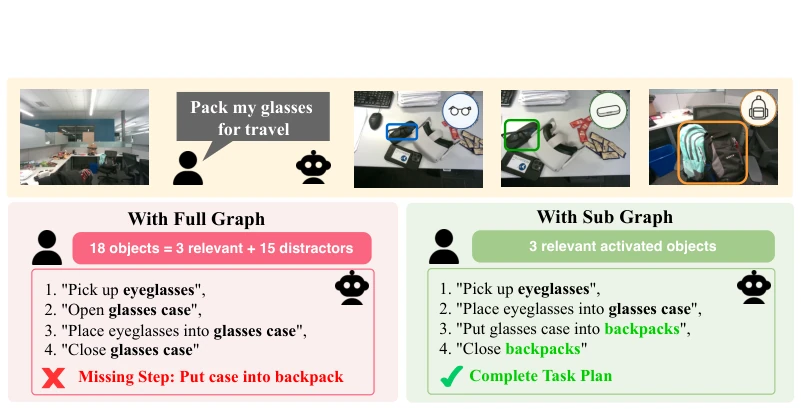
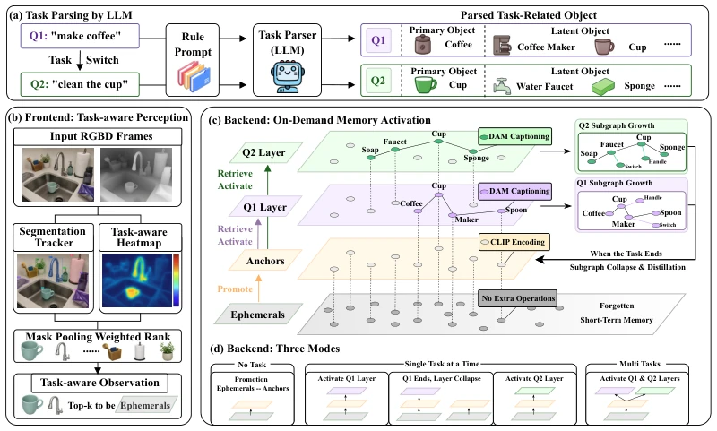
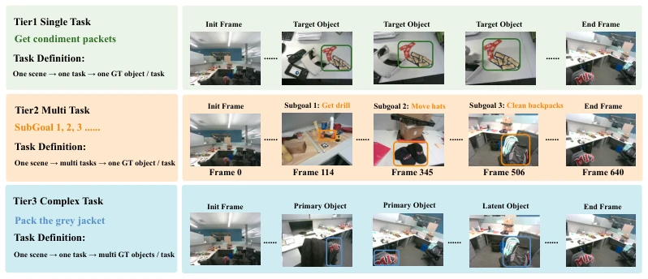

This paper casts a dampener on long-horizon robot perception: do not build maps blindly; building too much actually hinders progress. The authors keenly identified the "perception saturation" phenomenon, where full-scale scene graph construction overwhelms the LLM's context window, leading to planning failure. JITOMA attempts to replace "build then filter" with "on-demand growth", which sounds appealing, akin to JIT compilation in software engineering. However, to be frank, this "task-driven" perception gating mechanism offers no disruptive innovation over existing task-driven frameworks (such as Clio [9]), representing more of an engineering optimization. Nevertheless, their proposed JITOMA-Bench indeed fills the gap in long-horizon multi-task evaluation, particularly the Tier 3 complex intent testing is highly necessary. Although latency control is satisfactory, relying on LLMs for intent parsing and reordering raises questions about whether it is truly faster than pure visual retrieval in extreme real-time scenarios. Overall, it is a pragmatic improvement, but do not hype it as a paradigm shift.
Existing 3DSG methods mostly follow the "build then filter" AOT paradigm [1, 5], attempting to exhaust all semantic information during the exploration phase. However, empirical evidence shows that this blind pursuit of global completeness leads to severe observation redundancy, triggering the "perception saturation" effect. As shown in Figure 1, when the LLM receives a full map containing many irrelevant distractors, planning ability actually declines, resulting in cognitive myopia. Although existing task-driven frameworks like Clio [9] attempt to alleviate this, they are mostly post-hoc filtering, and front-end perception remains blindly compliant. FOUND-IT [14] attempts on-demand granularity, but perception and reasoning remain decoupled. The motivation of this paper lies in: humans do not perform fine-grained functional analysis on every object in an unfamiliar environment, but rather store impressions first and activate them when there is a task. Therefore, a mechanism is needed that can dynamically gate the perception stream according to task intent, activating only relevant subgraphs, to solve resource allocation and semantic noise problems in long-horizon tasks.

Figure 1: Study on the Perceptual Saturation Effect. Given a user command within a cluttered cubicle scene: Left (AOT Full Graph): Providing the LLM planner with an unconditional 3D scene graph containing all 18 environmental entities (including 15 task-irrelevant distractors) induces cog- nitive myopia, causing the plan to terminate prematurely and miss the final containment step. Right (JIT Subgraph, Ours): By selectively introducing only the 3 activated objects on-demand, our Just-In-Time framework yields a complete, correct execution sequence.
JITOMA adopts a front-end/back-end separated closed-loop architecture, the core is reconstructing graph construction as an "on-demand growth" process. The front-end generates a Top-down task heatmap based on LLM-parsed intent, gating the continuous RGB-D stream, storing only task-significant trajectories into short-term memory (Ephemerals), which after stability checks convert to low-cost dormant anchors (Dormant Anchors), storing only geometry, CLIP features, and keyframes, not dense semantics. After receiving the instruction, the back-end wakes up relevant anchors via lightweight retrieval, triggering only within the local subgraph DAM dense captioning and functional reasoning, generating functional sub-nodes. The core innovation lies in "on-demand activation" and "distillation": after task completion, useful semantics are written back to anchors, temporary structures discarded, achieving graph complexity growth based on cognitive demand rather than exploration time. Compared to traditional methods, it avoids the overhead of full-map construction, suppresses redundancy at the perception source via task heatmaps, rather than post-hoc filtering, and supports multi-task concurrent layers sharing basic anchors.

Figure 2: Overview of the JITOMA framework. (a) Intent Parsing: An LLM converts a natural- language command into explicit primary objects and latent functional targets required for execution. (b) Frontend Just-In-Time Perception: The parsed intent produces top-down task heatmaps that gate continuous RGB-D observations before they are written into memory, admitting only task- salient tracks as lightweight hypotheses. (c) Backend On-Demand Memory Activation: Stable observations are stored as low-cost dormant anchors. Upon a cognitive query, JITOMA retrieves and awakens only task-relevant anchors, triggering dense captioning, functional inference, and relational construction exclusively inside the activated local subgraph. (d) Temporal Operating Modes: JIT- OMA supports task-free conservative
The authors constructed JITOMA-Bench, containing Tier 1 basic localization, Tier 2 long-horizon task switching, Tier 3 complex intent reasoning. Comparison baselines include ConceptGraphs [5], ReasoningGraph [33], and Clio [9]. Metrics cover IoU/mR@K accuracy and Objs/Peak/TPF efficiency. Experiments show JITOMA accuracy on Tier 3 complex tasks is significantly better than baselines, and active node count is strictly limited (e.g., Office scene peak only 4), while baselines often reach hundreds or thousands. TPF stabilizes around 0.6s, although slightly higher than pure retrieval, it provides richer functional semantics. Results indicate that limiting active graph scale did not sacrifice accuracy, but instead improved robustness under long-horizon tasks, verifying the effectiveness of JIT strategy in balancing performance and efficiency.

Figure 3: Overview of the three-tier JITOMA-Bench evaluation. The benchmark progressively evaluates explicit single-object grounding (Tier 1), long-horizon task switching within a continuous scene (Tier 2), and complex instruction grounding over multiple primary and latent objects (Tier 3).